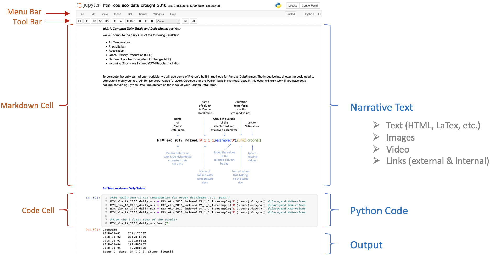

ICOS
The Integrated Carbon Observation System, ( ICOS, https://www.icos-cp.eu/ ), is a European research infrastructure responsible for measuring, storing and disseminating standardised, high quality, long timeseries of observations on greenhouse gas concentrations in the atmosphere, as well as on carbon fluxes between the atmosphere, the earth and oceans. The ICOS station network consists of about 150 stations all over Europe, subdivided into three separate domains; atmosphere, ecosystem and ocean.
ICOS Carbon Portal is the data centre of ICOS and is responsible for storing and disseminating ICOS data. To promote the usage of its available data, ICOS Carbon Portal offers a range of services towards researchers/scientists, policy makers and the general public. Virtual Research Environments based on Jupyter (https://jupyter.org/) constitute one part of these services.
Jupyter
Jupyter is a Virtual Research Environment (VRE) incorporating a collection of tools for interactive computing and sharing of computational ideas. From within every user account, it is possible to:
- create directories
- upload data (e.g. csv, txt, netcdf, hdf, tiff, GeoTIFF, png, jpeg, etc.)
- create code files and write code (plain python code files (.py) or IPython notebook files (.ipynb))
Our service is based on the official Jupyter Dockerfile jupyter/datascience-notebook with kernels for Python, Julia and R available. Julia and R are 'out of the box', but for the time being the ICOS Carbon Portal only provides technical support for Python.
IPython Notebooks
An IPython Notebook is an open-source web application that allows users to create and share interactive documents that contain live code, equations, visualizations and narrative text.

Access to notebooks and documentation
All openly available ICOS notebooks and supporting documentation can be found in the ICOS Carbon Portal Jupyter repository on GitHub.